-
Нове поколінняНове покоління комбінаторної пресотерапії
-
Для всіх розмірівТри рівня блискавок для пацієнтів всіх розмірів
-
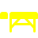
4 етапиЧотири етапи пульсуючої пневматичної компресії -
10 програмДесять програм послідовної біоміметич
-
УнікальністьТільки в Linfopress: пресомасаж холки і love-handles
Технології Linfopress Evolution PRO
Вперше технологія біоміметичної послідовної пульсації втілена в найкращий в світі апарат для пресотерапії. Linfopress Evolution PRO імітує природні пульсуючі рухи в чотирьох унікальних комбінаціях:
Нове покоління інтелектуальної пресотерапії.
Не мають рівних якість манжет і досконалість лікувальних програм.
Не мають рівних якість манжет і досконалість лікувальних програм.
Процедура Linfopress Evolution PRO
Переваги Linfopress Evolution PRO
- 1 Перший в світі апарат для пресотерапії з масажем ділянок холки і бочків (love-handles)
- 2 Нове покоління інтелектуальної пресотерапії: технологія біоміметичної послідовної пульсації
- 3 Підвищена безпека завдяки контролю тиску в кожній манжеті
- 4 Найзручніший в роботі. Манжети для ніг і рук зручно одягаються, мають три рівня блискавок для пацієнтів всіх розмірів
- 5 Найкомфортніший завдяки етапам розігріву і релаксації
- 6 Ключовий елемент програм "Детокс", "Схуднення", "Антицелюліт"
- 7 Використовується у спортивній медицині (розігрів перед тренуваннями, регенерація тканин)
- 8 Використовується у пост-операційній реабілітації для дренажу
- 9 Найвища якість матеріалів (апарат класу преміум)
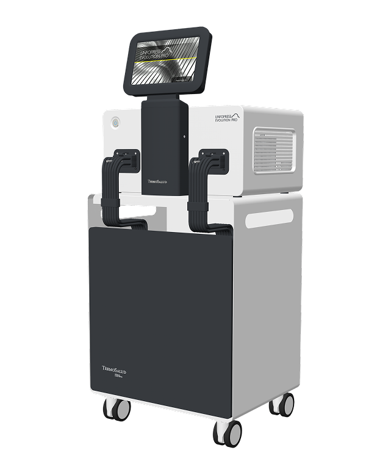
5 причин чому Zionic кращий апарат для контурного моделювання тіла
ZIONIC поєднує RF-нагрів і глибоку стимуляцію для точної корекції фігури. Інтелектуальний контроль температури та адаптивна дія забезпечують зменшення жиру, підтягування тканин і покращення
мікроциркуляції без болю та реабілітації.
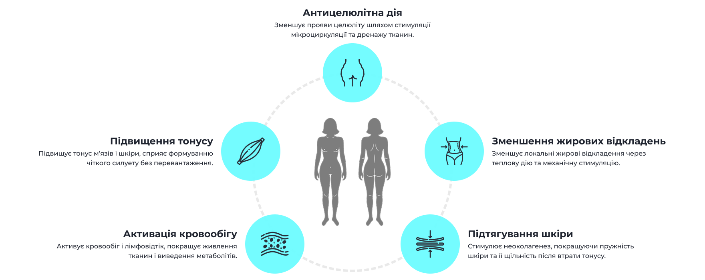
- Антицелюлітна дія Зменшує прояви целюліту шляхом стимуляції мікроциркуляції та дренажу тканин.
- Підвищення тонусу Підвищує тонус м’язів і шкіри, сприяє формуванню чіткого силуету без перевантаження.
-
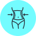
Зменшення жирових відкладень Зменшує локальні жирові відкладення через теплову дію та механічну стимуляцію. - Активація кровообігу Активує кровообіг і лімфовідтік, покращує живлення тканин і виведення метаболітів.
- Підтягування шкіри Стимулює неоколагенез, покращуючи пружність шкіри та її щільність після втрати тонусу.
Лікарі довіряють ZIONIC у щоденній практиці
Косметологи, дерматологи та керівники клінік Європі вже обрали ZIONIC як надійний
інструмент для моделювання тіла. Їхні відгуки це найкраще підтвердження ефективності.
інструмент для моделювання тіла. Їхні відгуки це найкраще підтвердження ефективності.
Олена Стоянова
PhD
Клініка Естетичної Медицини St. Esthetic, Київ
Клініка Естетичної Медицини St. Esthetic, Київ
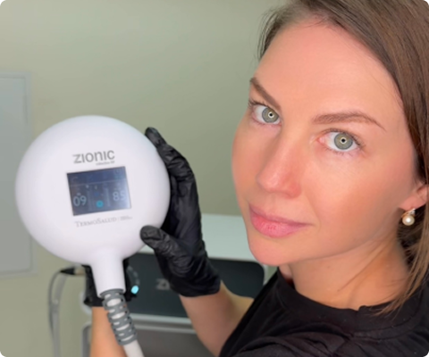
Ганна Кривошеєва
PhD
MD Клініка апаратної косметології L’CLINIC, Київ
MD Клініка апаратної косметології L’CLINIC, Київ
Carmen Navarro
Легенда Естетичної Медицини Іспанії
Клініка Carmen Navarro Sagasta, Мадрид
Клініка Carmen Navarro Sagasta, Мадрид
Показання
- Лікування едематозного целлюліту
- Зменшення затримки рідини та набряків
- Підготування та реабілітація після ліпосакції
- Пост-операційна реабілітація після мастектомії
- Детоксикація тканин та лімфодренаж
- Спорт: Підготовка, DOMS (крепатура), регенерація зв’язок
- Покращення кровообігу, зняття втоми ніг
- Післяпологове відновлення, симптоми менопаузи
Протипоказання
- Онкологія
- Порушення цілісності шкірного покриву
- Епілепсія, порушення психіки
- Цукровий діабет (декомпенсована форма)
- Аутоімунні захворювання
- Хронічні захворювання на стадії загострення
- ГРВІ, грип
Досвід лікарів
Фахівці «Арден-Палац» оцінили зручність в роботі манжет для ніг пацієнтів. Завдяки трьом рядам блискавок штани ідеально адаптуються для пацієнтів зростом від 1,5 до 2 метрів.
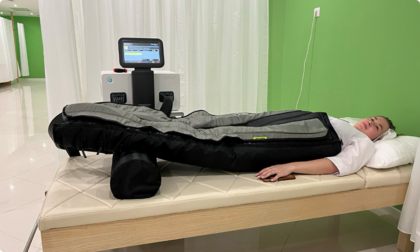
Linfopress Evolution PRO — це новий стандарт у пресотерапії, який перевершив усі мої очікування як лікаря
Працюючи в сфері естетичної медицини та реабілітації вже багато років, я мала справу з різними апаратами для пресотерапії. Але коли в нашій клініці з'явився Linfopress Evolution PRO, це повністю змінило підхід до процедури. З точки зору фахівця, апарат неймовірно зручний у щоденній роботі. Одягання манжет більше не забирає багато часу, а завдяки трьом рядам блискавок штани ідеально та швидко адаптуються під пацієнтів будь-якої комплекції — від мініатюрних дівчат до високих чоловіків зростом під два метри. Але головна його перевага — це технологія біоміметичної послідовної пульсації. Мої пацієнти в повному захваті від поетапного підходу. Стадія м'якого розігріву ідеально готує судини та тканини , що дозволяє нам абсолютно безболісно працювати навіть з пацієнтками, які мають чутливий фіброзний целюліт.
Олександр Віталієвський
Лікар естетичної медицини
Чому саме Linfopress Evolution PRO
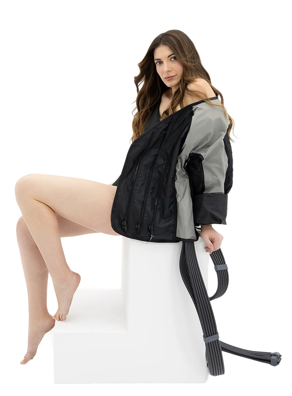
1
Унікальна комбінація різних форм пресомасажу в одній програмі
2
Преміальна якість матеріалів виконання
3
Абсолютно унікальна куртка для пресомасажу холки і бочків
4
Найзручніший метод одягання манжет
5
Найінтенсивніший лімфодренажний масаж (завдяки підготовці та біоміметиці)
Комплект поставки
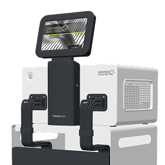
Апарат
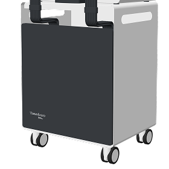
Функціональний візок
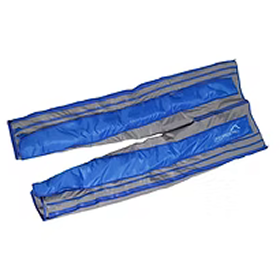
Дві манжети для ніг (штани і пояс)
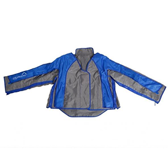
Куртка для масажу верхньої частини тулубу
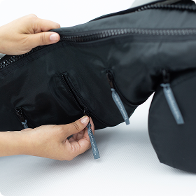
Дві манжети для рук
Питання та відповіді
Отримайте відповіді на поширені запитання про Linfopress Evolution PRO та про те,
як ця система може змінити вашу практику
як ця система може змінити вашу практику
-
Чим Linfopress Evolution PRO відрізняється від традиційних систем пресотерапії?Linfopress Evolution PRO оснащений передовою технологією біометричних імпульсів з 24 повітряними камерами, що перекриваються, імітуючи природні рухи м’язів. На відміну від традиційних систем, він пропонує індивідуальні програми, градієнтне регулювання компресії до 80 мм рт.ст. і 4 режими динамічної компресії.
-
Яка підготовка потрібна для роботи з системою?Спеціальної підготовки не потрібно. Рекомендується зручний одяг та консультація лікаря.
-
Чи можна поєднувати Linfopress Evolution PRO з іншими методами лікування?Так, система чудово комбінується з масажем, фізіотерапією та реабілітаційними програмами.